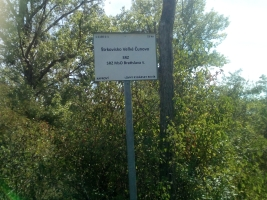
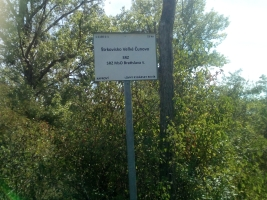

Chránené vtáèie územie (CHVÚ) Dunajské luhy - NATURA2000
Chránenej krajinnej oblasti (CHKO) Dunajské Luhy
Chránenı areál (CHA) SKUEV0269 Ostrovné Lúèky zóna B - 4. stupeò ochrany - Ve¾ké Jazero
a
Chránenı areál (CHA) SKUEV0269 Ostrovné Lúèky zóna D - 2. stupeò ochrany - Malé jazero
V súèasnosti (rok 2022) je kúpanie povolené len na malom jazere. Na ve¾kom jazere platí zákaz pohybu mimo turistickıch chodníkov a tie k jazeru nevedú!
V minulosti to však bolo trošku komplikovanejšie, pretoe tu platili 2 druhy ochrany:
OCHRANA PRÍRODY a OCHRANA VODNİCH ZDROJOV
A tu sú niektoré dôleité udalostí na jazerách:
od 1960 - zaèiatok aby štrku na miestach s najsilnejšími vrstvami naplavenıch štrkopieskov, bágrovanie jám.
od 1970 - vznik jazier alebo postupné zaplavenie dvoch bágrovísk. Vzniká Ve¾ké Èunovské a Malé Èunovské jazero.
70te a 80te roky sú spojené aj so zaèiatkami nudizmu a kúpania sa na jazerách aj napriek zákazu.
rok 1981 - uvedenı do prevádzky podzemnı zdroj pitnej vody Rusovce - Ostrovné lúèky - Mokraï bol vybudovanı postupne v priebehu rokov 1976 – 1990 . Názov dostal VZ ROL alebo VZ ROL-M. Èunovské jazerá boli súèasou ochráného pásma vodného zdroja tzv. pásme hygienickej ochrany (PHO) tohoto vodného zdroja.
01.09.1988 - vyhlásená prírodná rezervácia Ostrovné lúèky so 4. stupòa ochrany - Ve¾ké èunovské jazero bolo jej súèasou. Vımera 54,93 ha. Vvyhlásená vınosom Ministerstva kultúry Slovenskej socialistickej republiky è. 1160/1988-32 zo 30.6.1988, s úèinnosou od 1.9.1988
25.02.1988 - Èunovské jazerá sú zaèlenené do ochranného pásma hygienickej ochrany PHO II. stupòa. Rozhodnutím odboru po¾nohospodárstva, lesného a vodného hospodárstva Národného vıboru hlavného mesta SR Bratislavy è. vod. 489/405-1988, urèenie PHO I . a PHO II. stupòa pre vodnı zdroj Rusovce-Ostrovné lúèky-Mokraï (VZ ROL-M). PHO I. bolo urèené pre studòovı rad a PHO II pre okolie ktoré vtedy zahàòalo okrem Èunovskıch jazier aj Rusovské jazero a Ve¾kı zemník.
24.10.1992 - prehradenie starého koryta Dunaja- vodné dielo Gabèíkovo/zdr Hrušov - zmena prúdenia podzemnıch vôd v oblasti Èunovskıch jazier. Voda v jazerách postupne prestala ovplyvòova kvalitu podzemnej vody.
21.05.1998 - obe jazerá sa stávajú súèasou Chránenej krajinnej oblasti (CHKO) Dunajské luhy. Bola vyhlásená vyhláškou MzP SR è. 81/1998 Z. z. o Chránenej krajinnej oblasti Dunajské luhy z 3. marca 1998
30.08.1999 - zmena hraníc ochranného pásma vodárenského zdroja Rusovce - Ostrovné lúèky - Mokraï - VZ ROL-M. Hranica vodárenského zdroja PHO II sa posunula blišie k Èunovskım jazerám, ale jazero bolo stále jeho súèasou so zákazom kúpania. V zmysle vodoprávneho rozhodnutia Krajského úradu ivotného prostedia (KÚP) v Bratislave è. W/99/649/1999-GGL bol VZ zabezpeèenı pásmami hygienickej ochrany PHO 1. stupòa, PHO 2. stupòa – vnútorná èas, PHO 2. stupòa – vonkajšia èas . Dôvod: zmena prúdenia podzemnıch vôd v oblasti (VD Gabèíkovo) a voda v jazere u neovplyvòuje podzemnú vodu. Rusovské jazero a ïalšie územie bolo úplne vyòaté z ochranného pásma vodárenského zdroja.
24.07.2007 - Krajskı úrad ivotného prostredia v Bratislave rozhodol o vyòatí Èunovskıch jazier z ochranného pásma II. stupòa vodného zdroja. Rozhodnutie nadobudlo právoplatnos koncom júla alebo zaèiatkom augusta 2007. Na ve¾kom jazere ale stále platil 4. stupeò ochrany pretoe bolo súèasou PR Ostrovné lúèky a zákaz pohybu mimo vyhradeného územia - zákaz kúpania sa. Na malom jazere platil 2. stupeò ochrany prírody a bolo povolené kúpanie sa.
12.11.2008 - Vyhláškou Ministerstva ivotného prostredia Slovenskej republiky - Vyhláška è. 440/2008 Z. z, sa vyhlasuje Chránené vtáèie územie Dunajské luhy, ako chráneného územia èlenskej krajiny Európskej únie s názvom NATURA 2000. Èunovské jazerá sú súèasou tohoto územia.
rok 2009 - Krajskı úrad ivotného prostredia v Bratislave povolil vyhradenú èas ve¾kého Èunovského jazera pre návštevníkov za úèelom rekreácie a športu.
rok 2010 - Krajskı úrad ivotného prostredia v Bratislave zrušil vyhradené miesto pre verejnos za úèelom rekreácie a športu na ve¾kom Èunovskom jazere. Na konci sezóny 2010 bola za prítomnosti príslušnıch orgánov vykonaná revízia a skonštatovala, e územie je návštevníkmi degradované. Na ve¾kom jazere sa tak dalo pláva iba v roku 2009 a 2010. V tomto období mal na jazerách dokonca prevádzku aj bufet s názvom BUFET NA LÚÈKACH.
01.03.2021 - nariadením vlády SR sa vyhlasuje chránenı areál (CHA) SKUEV0269 Ostrovné lúèky a zaniká prírodná rezervácia (PR)Ostrovné lúèky. Ve¾ké Èunovské jazero patrí do Zóny B stále so 4. stupòom ochrany a Malé Èunovské jazero patrí do Zóny D a má 2. stupeò ochrany pod¾a § 15 zákona o ochrane prírody a krajiny. Iba na malom jazere je povolené kúpa sa. Toto nariadenie vlády 34/2021 Z.z. zo dòa 27. januára 2021 nadobúda úèinnos 1. marca 2021.
Medzi Rusovcami a Èunovom vedie cesta 1. triedy s názvom Balkánska. Na túto cestu sa tesne za zastavnou èasou Rusoviec napája bezmenná ved¾ajšia asfaltová cesta, ktorá ide cez Èunovské jazerá a konèí a pri bráne BVS. Na zaèiatku tejto cesty bola kedysi dávno vodárenskou spoloènosou osadená ochranná brána, ktorá zabraòovala vstupu do vodárenského pásma. Táto brána bola neskôr presunutá, ale jej pozostatky sa tam dajú pozorova ešte aj dnes.

Na tejto ved¾ajšej ceste zaparkujete iba s povoleniami od MiÚ Rusovce a Rybárskeho zväzu.
Ak po tejto ceste pokraèujete ïalej, dostanete sa a k rampe/závore(osadenej v roku 2008).
Tu väèšinou parkujú autá s povolením.


Kúsok za touto rampou ešte pred rokom 1999 viedla hranica pásma hygienickej ochrany II. stupòa (PHO II).
Pásmo tadia¾to u nevedie, ale ostala tu ešte spomienka v podobe starej tabule so znièenım ako èitate¾nım nápisom:
"VODNİ ZDROJ PHO II. STUPÒA - VNÚTORNÁ ÈAS NEPOVOLANİM VSTUP ZAKÁZANİ"

Hranica pásma bola v roku 1999 posunutá vyššie takmer a k Èunovskım jazerám.
Kúsok na¾avo od prvej rampy je potom osadená ešte jedna. Tá zabraòuje príjazdu áut lesnou cestou.

Od rampy pokraèuje asfaltka ïalej cez Rusovskı kanál k jazerám, u obklopená lesom.
Nová osadená tabu¾ka nám dáva na známos, e sa nachádzame v chránenom areáli - zóny B - so 4. stupòom ochrany.
Je tu aj popiska aké èinnosti sa tu nesmú vykonáva. Nachádzame sa v oblasti nazıvanej Ostrovné lúèky.
Ako sa blíme k Èunovskım jazerám narazíme ešte na jednu pamiatku síce u zarastenú, ale predsa tam ešte je.
Po roku 1999 tadia¾to viedlo vtedy nové ochranné pásmo a neskôr pravdepodobne v r.2005 tu bola presunutá brána so zákazom vstupu.
A takto vtedy vyzerala táto brána aj s nápisom:


Vtedy tu boli osadené aj malé betónové ihlany a spolu z naválanou hlinou zabraòovali autám préjs poved¾a brány. Dnes to na tomto mieste u vyzerá úplne inak. Je to všetko zarastené vegetáciou. Z nápisov tu ostala len zošúchaná laminátová tabu¾ka, kedysi hlásajúca: "VSTUP LEN PRE ÈLENOV RYBÁRSKEHO ZVÄZU".


Hneï kúsok odti¾to nájdeme ïalšie informaèné tabule a potom u uvidíme samotné Èunovské jazerá.

 

Ochranné pásmo vodného zdroja II. stupòa sa v roku 2007 posunulo ïalej za Èunovské jazerá a ostalo tak a do dnes (okt 2022). Ak pokraèujeme po asfaltke ïalej za jazerá dostaneme sa na územie tohoto nového pásma. Nájdeme tu aj tabu¾ky upozoròujúce na ochranu PHO II. stupòa. Takéto tabu¾ky sú rozmiestnené po celom území ochranného pásma a len nedávno BVS vymenila alebo upravila niektoré staršie tabu¾ky.


Aj keï boli obe jazerá vyòaté z ochranného pásma vodného zdroja, kúpanie je povolené len na malom jazere kde platí 2. stupeò ochrany prírody. Na ve¾kom jazere platí 4. stupeò ochrany prírody so zákazom pohybu mimo vyznaèenıch ciest a tie nevedú k jazeru.
§ 5.
1. Okolo kadého zariadenia, ktoré má slúi na hromadné zásobovanie pitnou vodou, musia by vymedzené a vodoprávnym konaním zabezpeèené pásma hygienickej ochrany (PHO).
2. Územie obklopujúce toto zariadenie bezprostredne je PHO1. stupòa. V tomto pásme musia sa urobi prísne opatrenia, aby voda nebola zneèisovaná a infikovaná; najmä treba z neho odstráni všetky zdroje zneèistenia, treba ho dôkladne asanova a oploti alebo inak zabezpeèi, aby prístup nepovolanıch ¾udí a prístup zvierat bol zamedzenı.
3. Ak je nebezpeèenstvo, e by voda mohla by zneèisovaná alebo vıdatnos zdroja ohroovaná zo vzdialenejších miest, musí sa vymedzi a vodoprávne zabezpeèi okolo pásma 1. stupòa ešte PHO 2. stupòa. V tomto pásme sa pod¾a povahy územia urobia všetky opatrenia, aby sa zabránilo zneèisovaniu a infikovaniu vody.
Vyhláška Ministerstva zdravotníctva è. 45 z 13. júna 1966 o vytváraní a ochrane zdravıch ivotnıch podmienok uverejnená v Zbierke zákonov Èeskoslovenskej socialistickej republiky v èiastke 17, vydanej 29. júna 1966, s. 189 - 198
§ 12
1. Okolo zdrojov, ktoré majú slúi na hromadné zásobovanie pitnou a úitkovou vodou, musia by zriadené pásma hygienickej ochrany (PHO).
2. PHO 1. stupòa je priestor okolo zdroja vody, ktorého ve¾kos a tvar sa urèí pod¾a èlenenia územia v okolí zdroja, pod¾a smeru prúdu vody a zloenia pôdy; prihliada sa aj na povahu a spôsob zastavania a vyuitia pozemkov okolo zdroja. V PHO 1. stupòa musia sa urobi prísne hygienické opatrenia, aby voda nemohla by zneèisovaná. Územie v tomto pásme musí by zbavené všetkıch zdrojov zneèistenia, dôkladne asanované a oplotené alebo inak zabezpeèené, aby sa zamedzilo prístupu nepovolanıch ¾udí a zvierat; musí sa zabezpeèi aj pred zneèistením zrákovımi prívalmi.
3. Ak je nebezpeèenstvo, e by voda mohla by zneèisovaná alebo vıdatnos zdroja ohrozovaná zo vzdialenejších miest, musí sa zriadi okolo PHO 1. stupòa ešte PHO 2. stupòa; toto pásmo sa urèí vdy pri odbere vody z vodného toku alebo nádre. V PHO 2. stupòa urèia sa pod¾a povahy územia opatrenia potrebné na to, aby sa zabránilo zneèisovaniu a infikovaniu vody.
5. Ve¾kos a tvar PHO urèia sa vodohospodárskym konaním; tımto konaním sa tie urèia spôsob a podmienky vyuitia pásiem 1. a 2. stupòa.
Záväzné opatrenia 17. Úprava o základnıch hygienickıch zásadách pre zriaïovanie, vymedzenie a vyuívanie ochrannıch pásiem vodnıch zdrojov urèenıch na hromadné zásobovanie pitnou a úitkovou vodou a pre zriaïovanie vodárenskıch nádrí, uverejnená vo vestníku Ministerstva zdravotníctva Slovenskej socialistickej republiky, roèník XXVII, èiastka 10-11, dòa 20. júla 1979, s. 73-81
§ 3
Pásmo hygienickej ochrany 1. stupòa 1. PHO 1. stupòa sa zriaïuje na zabezpeèenie ochrany miesta vodného zdroja v priestore odberu, prípadne záchytného zariadenia, pred monosou bezprostredného negatívneho ovplyvnenia alebo ohrozenia vodného zdroja, ïalej na ochranu pred negatívnymi zásahmi do najblišieho okolia záchytného zariadenia a na jeho ochranu pred poškodením, ako aj na ochranu vody v záchytnom zariadení pred zneèistením. Pri vodnıch nádriach zabezpeèuje PHO 1. stupòa vytvorenie podmienok pre dobrı vıvoj akosti vody. PHO 1. stupòa zahròuje obvykle miesto bezprostredne pri¾ahlé k miestu odberu, prípadne k miestu záchytného zariadenia.
§ 4
Pásmo hygienickej ochrany 2. stupòa
(1) PHO 2. stupòa sa zriaïuje na ochranu vıdatnosti, akosti alebo zdravotnej nezávadnosti vodného zdroja pred ohrozením zo vzdialenejších miest. Je urèené predovšetkım na ochranu pred mikrobiálnym zneèistením, zneèistením toxickımi látkami, látkami ovplyvòujúcimi senzorické vlastnosti vody a látkami inak škodlivımi; pri nádriach aj na ochranu pred priamym zneèistením z prítokov.
(2) V rozhodnutí o zriadení PHO 2. stupòa môe vodohospodársky orgán rozdeli toto pásmo pod¾a hydrogeologickıch pomerov, vzdialenosti k rozvodnici a konfigurácii terénu na vnútornú a vonkajšiu èas a urèi odlišné podmienky na ich uívanie.
(3) Ak sú preto predpoklady, mono zásady zmierni, prípadneve¾kos pásma primerane zmenši.
(zdroj:Peter Némethy ,05.12.2013,Problémy ochrany podzemnıch vôd, https://www.vuvh.sk/download/dok/POV/1.pdf)